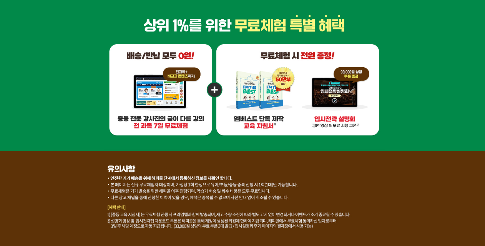
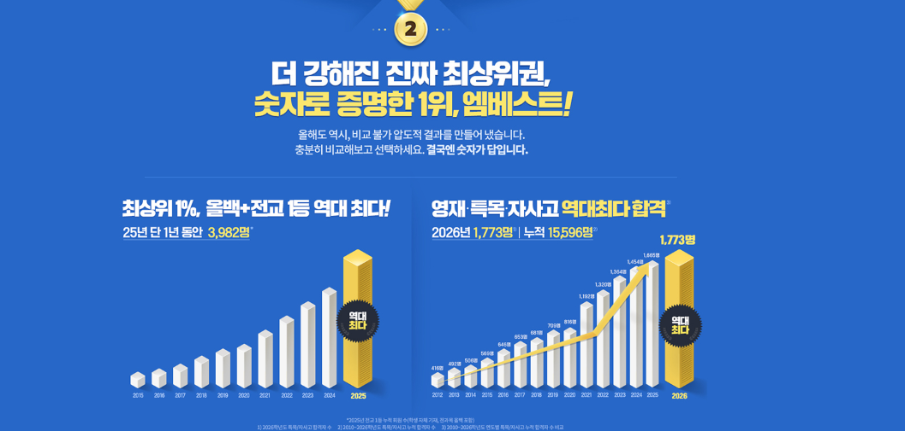

엠베스트 중등인강를 포함한 온라인 학습 서비스는 단순히 유명한 브랜드인지보다 학생이 실제로 꾸준히 활용할 수 있는 구성이 있는지가 중요합니다. 현재 학년과 부족한 과목, 학습 습관, 시험 대비 필요 여부를 먼저 정리한 뒤 강의 구성과 관리 기능, 복습 시스템을 비교하면 더 실용적으로 판단할 수 있습니다.
엠베스트 중등인강을 알아보는 이유
중등 인강은 고등 진학 전 실력을 쌓는 과정이라 강의 스타일과 과목 구성이 매우 중요합니다. 엠베스트 중등인강을 알아볼 때는 과목별 강사진과 커리큘럼, 수준별 강의 선택 폭, 학교 공부와 시험 대비까지 이어지는 흐름을 먼저 확인하는 것이 좋습니다. 특히 중등 시기에는 수학과 영어에서 격차가 벌어지기 쉬워 아이 수준에 맞는 선택이 가능한지가 중요합니다.

중등 인강은 강사진과 설명 방식도 중요합니다
학생마다 이해하기 쉬운 설명 방식이 다르기 때문에 강사진 구성과 강의 톤, 수업 템포를 확인해보는 것이 좋습니다. 개념 설명이 너무 빠르지 않은지, 문제풀이 과정이 자세한지, 시험 대비용 정리 강의가 있는지 등을 살펴보면 실제 학습 적합도를 판단하는 데 도움이 됩니다.
내신과 자기주도 학습을 함께 봐야 합니다
중학생은 학교 시험 대비뿐 아니라 스스로 학습 계획을 세우는 힘도 함께 길러야 합니다. 과목별 진도와 복습 흐름, 오답 관리와 반복 수강 기능이 있다면 실질적인 학습 효율이 높아질 수 있습니다. 학습량이 많아질수록 정리 기능과 계획 관리가 중요한 역할을 합니다.
함께 확인하기: 엘리하이초등 학습 습관과 과목 구성을 같이 비교해보세요. →과목 구성이 학년과 수준에 맞는지 확인하세요
온라인 학습 서비스를 선택할 때는 국어, 수학, 영어, 사회, 과학 같은 주요 과목이 학년 수준에 맞게 체계적으로 구성되어 있는지 확인해야 합니다. 단순히 강의 수가 많기보다 기초 개념, 유형 연습, 심화 학습과 시험 대비가 자연스럽게 이어지는지가 중요합니다. 아이가 현재 어느 과목에서 약한지에 따라 보완할 수 있는 구성이 있는지도 살펴보는 것이 좋습니다.
학습관리 기능은 실제 이용 만족도에 큰 영향을 줍니다
학생이 스스로 계획을 세우고 실천하는 습관이 잘 잡혀 있다면 인강 활용도가 높아질 수 있습니다. 하지만 많은 학생은 강의를 켜는 것과 꾸준히 이어가는 것 사이에 차이가 있습니다. 그래서 학습 진도 체크, 일정 관리, 복습 유도, 학부모 확인 기능 같은 관리 요소가 있는지 확인하는 것이 중요합니다.
| 비교 항목 | 확인 포인트 | 왜 중요한가 |
|---|---|---|
| 과목 구성 | 주요 과목과 학년별 커리큘럼 | 기초부터 심화까지 연결되는지 확인 |
| 학습관리 | 진도·계획·복습 관리 | 꾸준히 이어가기 위한 핵심 요소 |
| 시험 대비 | 문제풀이·단원정리·내신 대비 | 실전 활용도를 높이는 요소 |

강의만 보는 구조보다 복습 구조가 중요합니다
한 번 강의를 듣는 것만으로 실력이 바로 오르지는 않습니다. 개념을 이해한 뒤 문제풀이와 오답 정리, 다시 보기와 취약 단원 복습까지 이어져야 학습 효과가 높아집니다. 특히 중등 과정은 단원 누적 학습이 중요하므로 반복 수강과 복습용 정리 자료가 있는지 함께 보는 것이 좋습니다.
초등과 중등은 선택 기준이 조금 다릅니다
초등은 아이가 흥미를 잃지 않고 꾸준히 공부하도록 돕는 구조가 중요합니다. 반면 중등은 내신 관리와 시험 대비, 과목별 난도 조절이 더 중요해집니다. 따라서 같은 온라인 학습 서비스라도 학년별로 어떤 강점이 있는지 따로 살펴봐야 합니다.
함께 확인하기: 비상교육 온리원 중등중등 내신 대비와 학습관리을 같이 비교해보세요. →내신 대비와 개념 학습의 균형이 필요합니다
학교 공부를 따라가는 데 도움이 되려면 개념 설명만 있는 것이 아니라 단원별 문제풀이와 학교 시험 대비가 함께 제공되어야 합니다. 시험 직전에 빠르게 정리할 수 있는 구성이나 취약 단원 보완 기능이 있으면 더 효율적으로 활용할 수 있습니다.
아이의 성향에 맞는 학습 방식인지 확인하세요
어떤 학생은 짧고 간결한 강의를 선호하고, 어떤 학생은 자세한 설명과 반복 학습을 더 잘 따라갑니다. 따라서 강의 스타일과 화면 구성, 문제풀이 방식, 학습 흐름이 아이의 성향과 잘 맞는지 보는 것이 중요합니다. 학습 서비스가 좋더라도 아이와 맞지 않으면 지속성이 떨어질 수 있습니다.
학부모가 확인할 수 있는 정보도 중요합니다
학부모 입장에서는 아이가 실제로 얼마나 학습했는지, 어떤 과목이 부족한지, 진도가 계획대로 진행되는지를 확인할 수 있으면 도움이 됩니다. 너무 세밀한 개입보다 큰 흐름을 확인하고 필요한 시점에만 점검할 수 있는 구조가 실용적일 수 있습니다.
가격만 보지 말고 활용도를 함께 보세요
온라인 교육 서비스는 단순히 가격이 저렴한지보다 실제로 얼마나 자주 활용할 수 있는지가 더 중요합니다. 강의를 많이 제공하더라도 이용 빈도가 낮으면 효율이 떨어질 수 있습니다. 아이가 자주 활용할 수 있는 구조인지, 장기간 이용 가치가 있는지를 함께 따져보는 것이 좋습니다.
함께 확인하기: 엘리하이초등 학습 습관과 과목 구성을 같이 비교해보세요. →무료체험이나 상담 전 확인하면 좋은 내용
상담을 받거나 체험을 시작하기 전에 현재 학년과 부족한 과목, 목표 수준, 아이의 학습 성향을 정리해두면 비교가 쉬워집니다. 어떤 과목이 고민인지, 시험 대비가 필요한지, 기본 개념 보완이 우선인지 먼저 정리하면 필요한 정보를 더 정확하게 확인할 수 있습니다.
실제로 꾸준히 활용할 수 있는 구조와 아이에게 맞는 학습 방식인지가 더 중요할 수 있습니다.
결국 중요한 것은 꾸준히 이어가는 구조입니다
교육 서비스는 한 번에 많은 강의를 제공하는 것보다 학생이 무리 없이 꾸준히 활용할 수 있는 구조가 더 중요합니다. 하루 학습량이 적절한지, 복습이 자연스럽게 이어지는지, 학년이 올라가도 학습 흐름을 이어갈 수 있는지 살펴보면 선택에 도움이 됩니다.
최종 비교 전 체크리스트를 정리하세요
강의 구성, 과목 범위, 학습관리 기능, 복습 시스템, 내신 대비 요소, 학부모 확인 기능과 가격까지 한 표에 놓고 비교해보면 각 서비스의 특징이 더 명확하게 보입니다. 막연하게 유명한 서비스를 고르기보다 아이에게 실제로 맞는지를 기준으로 정리하는 것이 좋습니다.
